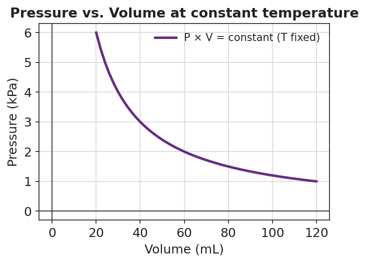

01 Phenomenon
You seal the tip of a syringe full of air with your finger, then push the plunger in. It moves at first, then fights back — the harder you push, the harder it pushes back, and you can never reach the bottom. Pull the plunger out against the seal, and it resists the other way and springs back when you let go. The amount of air never changed; no air went in or out. Yet the trapped gas behaves like a spring.
02 Driving question
Why does a syringe get harder to push as you compress the air inside?
03 Notice & wonder
| I notice… | I wonder… |
|---|---|
Turn & Talk #1: As you push the plunger in, the volume of the trapped air goes down. In one sentence, what happens to the pressure — and how do you know from what you felt?
04 Initial model
Before your teacher names any rule: draw the air particles inside the syringe in two pictures — one with the plunger pulled out (large volume) and one with the plunger pushed in (small volume). Use the same number of dots in both boxes.
| Plunger OUT — large volume | Plunger IN — small volume |
|---|---|
| (draw the particles) | (draw the particles) |
In which box do the particles hit the walls more often? _______________
Based on your drawing, when the volume gets smaller, the pressure should get _______________ (larger / smaller).
What two things must stay the same for this to be a fair comparison? _______________________________________________
05 Investigate
Part 1 — BTC: collect the data, find the rule
Working at your group’s vertical surface, change the volume of the trapped gas (by hand on the syringe and by dragging the wall in the PhET Gas Properties simulation, holding temperature and particle count fixed). Record the pressure at each volume. Then look for a pattern.
| Volume (mL) | Pressure (kPa) | Volume × Pressure |
|---|---|---|
| 120 | ||
| 60 | ||
| 40 | ||
| 30 | ||
| 20 |
As the volume goes down, the pressure goes _______________ .
Look at the last column. What stays (about) the same every time? _______________
Write the rule your group found, in your own words:
Part 2 — Read the P–V curve
Look at figures/pressure_volume_curve.png:

- Pick two points on the curve. Read the volume and pressure at each, and multiply.
Point 1: V = ____ mL, P = ____ kPa → P × V = ____ Point 2: V = ____ mL, P = ____ kPa → P × V = ____
What do you notice about the two products? _______________________________________________
Why is the curve a smooth bend instead of a straight line? _______________________________________________
Drag the slider. Notice the product P × V stays the same — squeeze the gas into half the volume and the pressure doubles. That inverse relationship is what P₁V₁ = P₂V₂ says.
06 Make it make sense
Use the pressure–volume relationship, P₁V₁ = P₂V₂, for each problem. Show your substitution and your answer with units. (These are the practice problems you will confirm against the Answer Key.)
1. A trapped gas occupies 50.0 mL at 100. kPa. At constant temperature it is compressed to 25.0 mL. Find the new pressure.
P₁V₁ = P₂V₂ → ( ____ )( ____ ) = P₂( ____ ) P₂ = _______________ kPa
2. A gas occupies 4.0 L at 2.0 atm. At constant temperature its volume increases to 8.0 L. Find the new pressure.
P₁V₁ = P₂V₂ → ( ____ )( ____ ) = P₂( ____ ) P₂ = _______________ atm
3. A gas is at 90. kPa in a 6.0 L container. At constant temperature it is compressed until the pressure reaches 270 kPa. Find the new volume.
P₁V₁ = P₂V₂ → ( ____ )( ____ ) = ( ____ )V₂ V₂ = _______________ L
07 Key vocabulary
- pressure–volume relationship
- for a fixed amount of gas at constant temperature, pressure and volume are inversely proportional, so their product is constant; written P₁V₁ = P₂V₂. Halving the volume doubles the pressure.
- inverse proportion (inverse relationship)
- a relationship in which one quantity is multiplied by a factor exactly as the other is divided by that same factor, so their product stays constant; pressure and volume relate this way at constant temperature (P up, V down).
- gas pressure
- the force per unit area that gas particles exert by colliding with the walls of their container; packing the same particles into a smaller volume means more collisions per second per area, so the pressure rises.
Use each term in a sentence about today’s investigation. Do not copy the definition — describe something you actually did, felt, or observed.
pressure–volume relationship: _______________________________________________ _______________________________________________
inverse proportion: _______________________________________________ _______________________________________________
gas pressure: _______________________________________________ _______________________________________________
08 Revise your model
Return to your Initial Model (the two particle drawings). Add vocabulary labels:
Label the small-volume box with what happens to the gas pressure and why (collisions): _______________________________________________
Write the result as an inverse proportion: when volume is multiplied by ____, pressure is _______________ by the same factor, so P × V stays _______________ .
Then finish this Because / But / So sentence:
When you squeeze a sealed syringe to half its volume, the pressure doubles because __________________________________________, but __________________________________________, so __________________________________________.
09 Exit ticket
(a) A gas occupies 8.0 L at 1.5 atm. At constant temperature it is compressed to 3.0 L. Use P₁V₁ = P₂V₂ to find the new pressure. Show your work.
P₁V₁ = P₂V₂ → ( ____ )( ____ ) = P₂( ____ ) P₂ = _______________ atm
(b) A gas is at 200. kPa in a 2.0 L container. At constant temperature the pressure drops to 50. kPa. Find the new volume. Show your work.
P₁V₁ = P₂V₂ → ( ____ )( ____ ) = ( ____ )V₂ V₂ = _______________ L
(c) In one sentence, use the particle model to explain why decreasing a gas’s volume increases its pressure.
10 Explore further
- Gas Properties – PhET Interactive Simulations (` Use the "Ideal" screen with the temperature and particle count held constant. Students drag the wall to shrink the container's volume and watch the pressure gauge climb, then read off paired (P, V) values to test whether PV stays constant. The simulation makes the particle picture visible — fewer cubic centimeters means particles strike the walls more often, so pressure rises.phet.colorado.edu
- Syringe-pressure exploration (hands-on, no chemicals): each group gets a 30–60 mL plastic syringe. Seal the tip, record the starting volume, then push the plunger to set volumes (e.g., 60 → 40 → 30 → 20 mL) and feel how the resistance grows. Pair with the PhET pressure readings, or with a low-cost pressure sensor if available, to collect a real (P, V) data set. Connect the felt resistance to the rising bars in `figures/pressure_volume_curve.png`.
- Graph reading: students interpret `figures/pressure_volume_curve.png` to answer: what happens to pressure as volume drops? Why is the curve a smooth bend rather than a straight line? Pick any two points on the curve and check that P × V gives the same number.